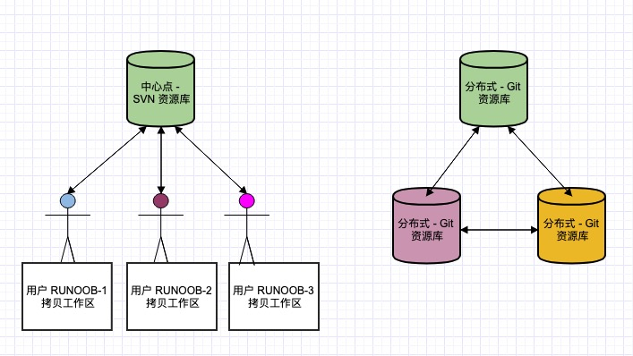

note list
Git is an open-source distributed version control system, used to handle any projects, small or large, in an agile and efficient manner.
Git is an open-source version control software developed by Linus Torvalds to help manage Linux kernel development.
Git differs from common version control tools such as CVS and Subversion in that it adopts a distributed repository approach and does not require server-side software support.
Difference between Git and SVN
Git is not just a version control system; it is also a content management system (CMS), work management system, and more.
If you come from an SVN background, you need to make some mental adjustments to adapt to the concepts and features that Git provides.
Differences between Git and SVN:
1. Git is distributed, SVN is not: This is the most essential difference between Git and other non-distributed version control systems, such as SVN, CVS, etc.
2. Git stores content in metadata mode, while SVN stores it by file:All resource control systems hide the metadata of files in a folder similar to .svn, .cvs, etc.
3. Git branches are different from SVN branches:Branching in SVN is not special at all; in fact, it is just another directory in the repository.
4. Git does not have a global version number, while SVN does:So far this is the biggest feature that Git lacks compared to SVN.
5. Git's content integrity is better than SVN:Git's content storage uses the SHA-1 hash algorithm. This ensures the integrity of code content and reduces damage to the repository in the event of disk failures and network problems.

Git Quick Start
This site also provides a quick-start guide for Git; you can clickThe note must be an extension of this article's content!For article submission, click here
After getting started, it is recommended to learn the detailed Git tutorial on this site.
Git Complete Command Reference address:http://git-scm.com/docs
PDF version of the command reference:github-git-cheat-sheet.pdf